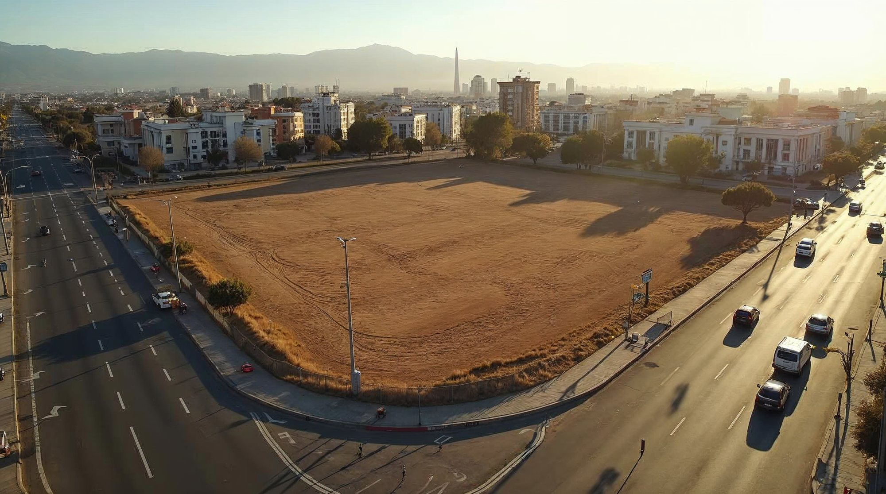

<!-- ════════════════════════════════════════════════════════════════════════
     SECCIÓN 02 — PORTADA — «Postula tu terreno»
     ────────────────────────────────────────────────────────────────────
     Vista previa:  vista-previa/02-*.jpg
     Archivos que usa:
       · recursos/imagenes/terreno-hero.jpg
     Nota: La foto de fondo tiene un movimiento leve al hacer scroll (parallax). El botón rojo baja al formulario.
     ════════════════════════════════════════════════════════════════════
     Pega TODO este archivo dentro de un bloque «HTML personalizado».
     Antes tiene que estar pegado UNA sola vez 00-estilos-base.html.
     ════════════════════════════════════════════════════════════════════════ -->
<style>
/* ── HERO ─────────────────────────────────────────────────────── */
.hero{position:relative;min-height:100svh;display:flex;align-items:flex-end;overflow:hidden;background:var(--vino)}
.hero-media{position:absolute;inset:-6% 0;z-index:0;will-change:transform}
.hero-media img{width:100%;height:100%;object-fit:cover;object-position:center 45%}
/* El campo de color termina en punta de chevron: es el BORDE entre color y foto,
   no una flecha encima. Regla del sistema — ver docs/SISTEMA-DE-MARCAS.md */
.hero-campo{position:absolute;inset:0;z-index:1;
  background:linear-gradient(104deg,
    var(--rojo) 0%,   var(--rojo) 22%,
    rgba(224,35,31,.95) 31%, rgba(214,33,29,.82) 39%,
    rgba(198,31,26,.62) 47%, rgba(170,27,22,.40) 55%,
    rgba(140,24,18,.22) 63%, rgba(115,21,16,.09) 71%,
    rgba(101,20,15,0) 80%)}
/* Rescoldo vino que continúa el rojo dentro de la foto — sin bordes */
.hero-rescoldo{position:absolute;inset:0;z-index:2;pointer-events:none;
  background:linear-gradient(104deg,rgba(101,20,15,.30) 0%,rgba(101,20,15,.24) 34%,
    rgba(101,20,15,.15) 52%,rgba(101,20,15,.06) 68%,rgba(101,20,15,0) 84%)}
.hero-velo{position:absolute;inset:0;z-index:3;
  background:linear-gradient(180deg,rgba(0,0,0,.42) 0%,rgba(0,0,0,.06) 40%,rgba(0,0,0,.55) 100%)}
.hero-referencial{position:absolute;right:0;bottom:0;z-index:6;
  padding:14px clamp(20px,5vw,40px);font-size:.68rem;letter-spacing:.16em;
  text-transform:uppercase;color:rgba(255,255,255,.55);font-weight:500;pointer-events:none}
@media (max-width:560px){.hero-referencial{font-size:.6rem;letter-spacing:.1em}}
.hero-contenido{position:relative;z-index:5;width:100%;padding-bottom:clamp(64px,10vh,120px);padding-top:150px}
.hero-etiqueta{color:#fff;font-size:.8rem;font-weight:500;letter-spacing:.28em;text-transform:uppercase;
  padding-bottom:14px;margin-bottom:24px;position:relative;display:inline-block}
.hero-etiqueta::after{content:'';position:absolute;left:0;bottom:0;width:44px;height:2px;background:#fff}
.hero-titulo{color:#fff;font-size:clamp(2.4rem,6vw,4.9rem);line-height:1.05;font-weight:300;letter-spacing:-.018em;max-width:19ch}
.hero-titulo strong{display:block;font-weight:700}
.hero-titulo .sub{display:block;font-weight:300;font-size:.44em;line-height:1.16;
  letter-spacing:-.008em;margin-top:.52em;max-width:27ch}
.hero-bajada{color:rgba(255,255,255,.92);font-size:clamp(1rem,1.5vw,1.22rem);font-weight:300;
  margin-top:26px;max-width:46ch;line-height:1.6}
.hero-bajada strong{font-weight:600;color:#fff}
.hero-acciones{display:flex;flex-wrap:wrap;gap:16px;margin-top:40px}

.btn{display:inline-flex;align-items:center;gap:11px;padding:16px 38px;border-radius:999px;
  font-size:.85rem;font-weight:600;letter-spacing:.08em;text-transform:uppercase;
  transition:background .35s var(--exp),color .35s var(--exp),transform .35s var(--exp),box-shadow .35s var(--exp)}
.btn:hover{transform:translateY(-2px)}
.btn-rojo{background:var(--rojo);color:#fff}
.btn-rojo:hover{background:var(--rojo-osc);box-shadow:0 10px 30px rgba(229,37,33,.36)}
.btn-linea{border:1.6px solid rgba(255,255,255,.75);color:#fff}
.btn-linea:hover{background:#fff;color:var(--texto)}
.btn svg{width:15px;height:15px;flex-shrink:0}
</style>

<!-- ════════════ HERO ════════════ -->
<section class="hero" id="inicio">
  <div class="hero-media" id="hero-media">
    
  </div>
  <div class="hero-campo"></div>
  <div class="hero-rescoldo"></div>
  <div class="hero-velo"></div>
  <span class="hero-referencial">Imagen referencial</span>
  <div class="hero-contenido">
    <div class="contenedor">
      <span class="hero-etiqueta fade-up">Más Center · Grupo IFB</span>
      <h1 class="hero-titulo fade-up d1"><strong>Buscamos terrenos</strong><span class="sub">Con potencial para nuevos proyectos comerciales</span></h1>
      <p class="hero-bajada fade-up d2">
        <strong>¿Tienes un terreno en una ubicación estratégica?</strong> Estamos buscando nuevas
        ubicaciones y oportunidades para desarrollar proyectos.
      </p>
      <div class="hero-acciones fade-up d3">
        <a href="#contacto" class="btn btn-rojo">
          Postula tu terreno
          <svg viewBox="0 0 24 24" fill="none" stroke="currentColor" stroke-width="2.4"><path d="M5 12h14M13 6l6 6-6 6"/></svg>
        </a>
        <a href="#buscamos" class="btn btn-linea">Qué buscamos</a>
      </div>
    </div>
  </div>
</section>
